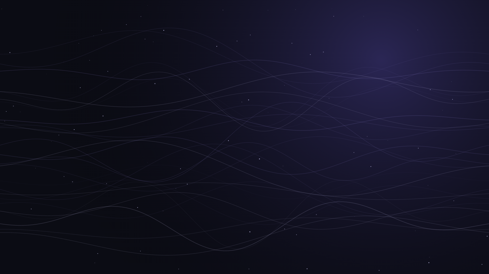
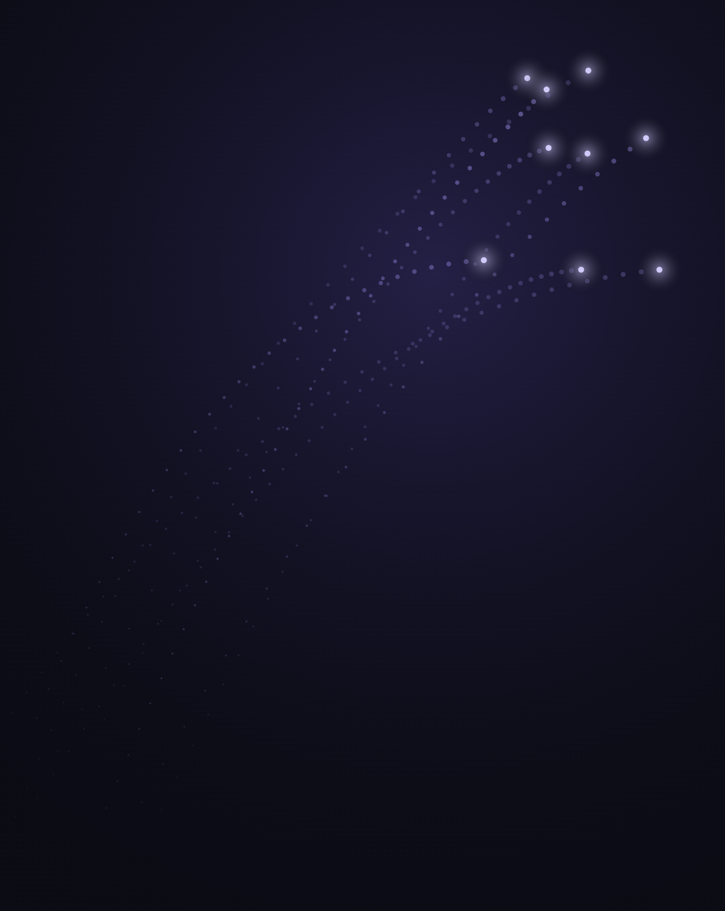

How great leaders adapt to tomorrow’s workforce.
“The young people of today think of nothing but themselves. They have no reverence for parents or old age. They are impatient of all restraint.”
| Generation | Born |
|---|---|
| Baby Boomers | 1946–1964 |
| Gen X | 1965–1980 |
| Millennials | 1981–1996 |
| Gen Z | 1997–2012 |
| Gen Alpha | 2013 onwards |
Instead of asking “What should I do?” — they ask:

| Traditional leadership | Modern leadership |
|---|---|
| Boss | Coach |
| Commands | Collaboration |
| Control | Trust |
| Annual review | Continuous feedback |
| Process | Purpose |
“Do exactly what I tell you.”
“Here’s the goal. Surprise me.”
“Every generation changes the workplace. Great leaders change with it.”